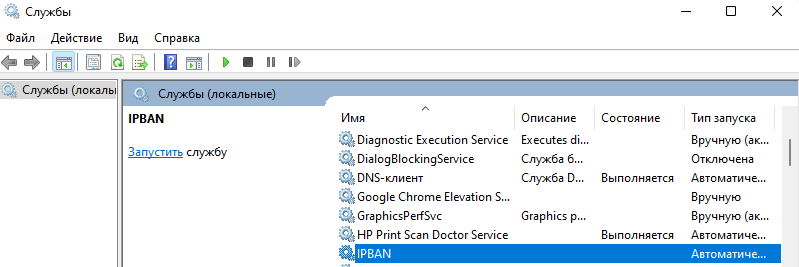

Защита RDP с помощью IPBan
Защиту RDP от перебора паролей выполняется с помощью утилиты IPBan.
Настройка локальной политики безопасности
Для корректной работы IPban требуется настроить локальную политику безопасности. Для ее вызова нажимаем Win+R
Запускаем ее
Параметры безопасности - Локальные политики - Аудит входа в систему.{kind=link}
Ставим галочки на Успех и Отказ
{kind=link}
Установка IPBan
Скачанный zip архив с утилитой распоковываем в каталог C:\IPBan
С помощью утилиты sc.exe создаем новый сервис
sc.exe create IPBAN type=own start=delayed-auto binPath=c:\IPBAN\DigitalRuby.IPBan.exe DisplayName=IPBAN
{kind=link}
Настройка IPban
В папке с установленным IPBan открываем файл ipban.config и находим строку
и через запятую добавляем сети в белый список.По желанию можно поменять количество неудачных попыток ввода. По умолчанию в файле 20.
Далее устанавливаем количество попыток ввода пароля - 5. Если установить меньше, то программа все равно использует значение 5.
По умолчанию время бана ip сутки
Устанавливаем необходимое время бана. Например минуту
Примечание
По умолчанию внутренние адреса не блокируются. Если нужно банить и внутренние адреса нужно найти строку
и поменять значение на trueДалее сохраняем файл с настройками.
Полный список параметров конфигурационного файла.
Note
IPban добавляет правила во встроенный брандмауер windows. Если установлен сторонний продукт, например Kaspersky Endpoint Security, то в нем нужно отключить межсетевой экран и проверить
Запуск IPBan
Для запуска IPban открываем оснастку службы. Для ее вызова нажимаем Win+R
Запускаем ее
Находим созданную службу IPban {kind=link}
и запускаем ее
{kind=link}
Примечание
Можно вместо графического интерфейса можно использовать командную строку
или PowershellМониторинг
Если программа была установлена в папку C:\IPBan, то логи можно посмотреть в файле
В брандмауере Windows создается правило блокировки{kind=link}
Если открыть данное правило, и в нем вкладку область, то будет виден список заблокированных адресов. При необходимости адрес можно удалить, чтобы разблокировать пользователя. Если необходимо, то пользователя можно добавить в белый список в конфигурационном файле.
IPBan работает на основе аудита событий безопасности. В журнале безопасности можно посмотреть события неудачного входа. Для этого запускаем оснастку
Далее журналы Windows - Безопасность. Справа на вкладке действия нажимаем фильтр текущего журнала и устанавливаем фильтр по событию
{kind=link}
Принудительная блокировка и разблокировка
Вы можете вручную заблокировать IP-адреса, поместив файл
Вы можете вручную разблокировать IP-адреса, поместив файл
в ту же папку, что и сервис IPBan. IP-адреса указаны в виде обычного текста, по одному IP-адресу в строке. В следующем цикле IPBan разблокирует любой IP-адрес в файле, а затем удалит файл. Каждый IP-адрес будет удален из базы данных брандмауэра и IPBan.Интеграция с IPThreat.net
IPThreat.net сервис созданный автором программы ipban. В него попадают вредоносные ip компьютеров, которые атакуют пользователей подключенных к данному сервису.
Для подключения данного сервиса нужно в конфигурационном файле в строку
добавить значение в формате External firewall uri rules to block, format is (one per line):
В данном случае на 1 сутки добавляются в фаервол адреса с адреса https://lists.ipthreat.net/file/ipthreat-lists/threat/threat-10.txt.gzВ ссылке указан файл
10 означает степень вероятности того, что ip вредоносный. Можно указывать следующие цифры 0, 10, 20, 30, 40, 50, 60, 70, 80, 90, 100. Чем выше цифра - тем точнее определение, что ip точно атакует, в файлах меньше 100 больше может быть ложных срабатываний. Последняя цифра 10000 означает, что из этого файла берутся только 10000 первых адресов. После этого нужно перезапустить службу IPBan: